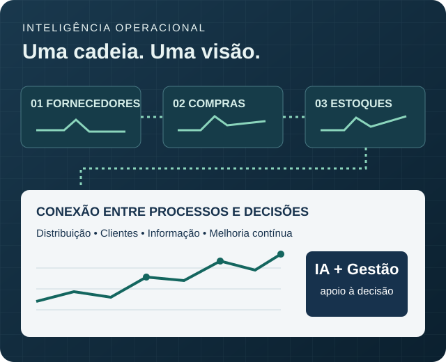
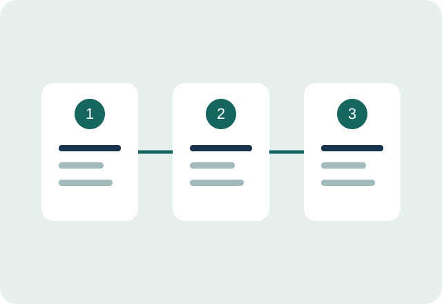

Supply Chain
Integre compras, fornecedores, estoques e distribuição. Identifique gargalos e organize indicadores para acompanhar sua operação.
Explorar Supply ChainConsultoria para pequenas e médias empresas
Supply Chain e Inteligência Artificial aplicados aos desafios reais da sua empresa. Transforme processos dispersos em prioridades claras e ações consistentes.
Visão integrada da operação

Supply Chain inteligente. Decisões melhores.
Onde podemos ajudar
Uma operação eficiente depende da conexão entre pessoas, processos e informação. Supply Chain e IA são o foco; a gestão sustenta a execução.
Integre compras, fornecedores, estoques e distribuição. Identifique gargalos e organize indicadores para acompanhar sua operação.
Explorar Supply ChainIdentifique tarefas que podem ganhar agilidade com IA. Comece com um caso de uso claro, teste em pequena escala e revise os resultados.
Explorar IA aplicadaTransforme o diagnóstico em prioridades, responsáveis e prazos. Acompanhe a execução com uma rotina simples de gestão.
Explorar gestão
Como trabalhamos
Ouvir o gestor, mapear processos e identificar as principais dificuldades da operação.
Escolher prioridades, indicadores, responsáveis e ações proporcionais à realidade da empresa.
Revisar o que foi implementado e ajustar o plano com base nos resultados observados.
Sobre a consultoria
A ESP Consulting é a marca de consultoria de Elias Silva Pinto. Sua formação em Administração de Empresas, Comércio Exterior e Logística se conecta ao estudo de desenvolvimento de software e à aplicação de IA em problemas empresariais.
A proposta é aproximar o conhecimento de gestão das ferramentas digitais, com comunicação clara e foco em soluções que possam ser colocadas em prática.
Ideias que orientam a transformação
Referências de gestão e tecnologia ajudam a compreender por que método e inovação precisam caminhar juntos.
Um sistema ruim vencerá uma boa pessoa todas as vezes.
Na prática: melhorar o sistema de trabalho, em vez de depender apenas do esforço individual.
A IA é a nova eletricidade.
Na prática: explorar novas capacidades em tarefas concretas, com objetivos claros e revisão humana.
Citações para contexto conceitual. Os autores não possuem vínculo com a ESP Consulting nem a endossam. Detalhes em Referências e créditos.
O primeiro passo é uma conversa
Conte o contexto da sua empresa e a área em que precisa de apoio.